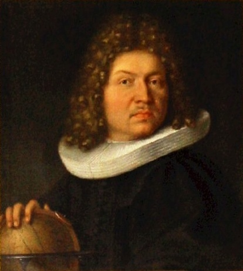

Jakob Bernoulli

Johann Bernoulli
In semester 2 of my Diploma, I had the opportunity to learn Calculus I under Dr Nur Syahidah Binti Nordin, in that class we had to do a group assignment on the practical application of Calculus. My teams topic was the Application of Parabolic arc of hanging wires. During our research, we found out that a hanging wire is not a parabolic arc but in fact a catenary arc.
Catenary Arc : The curve a hanging flexible wire or chain assumes when supported at its ends and acted upon by a uniform gravitational force. The word catenary is derived from the Latin word for "chain."
As such our Group Project was technically wrong but we managed to present our findings to the whole class and got our marks accordingly. But what fascinate me even more was that mathematicians from the 17th century have figured this out long before my team did.
|

Jakob Bernoulli |
Johann Bernoulli |
Jakob Bernoulli and his brother Johan Bernoulli, genius mathematician brothers all the way from the 17th century had a famous clash with this problem. They had a brotherly clash on whether or not a chain hangs in a parabolic arc or it is not.Through this clash,in 1690 Jakob Bernoulli discovered in fact that it is not parabolic and found the identity of the catenary arc-that is to say, its equation.
It truly fascinate me how people from the 17th Century discovered this without the use of modern technology. As such this inspired me to delve deeper into the mathematical subject in my diploma years.
Video on Catenary for more details